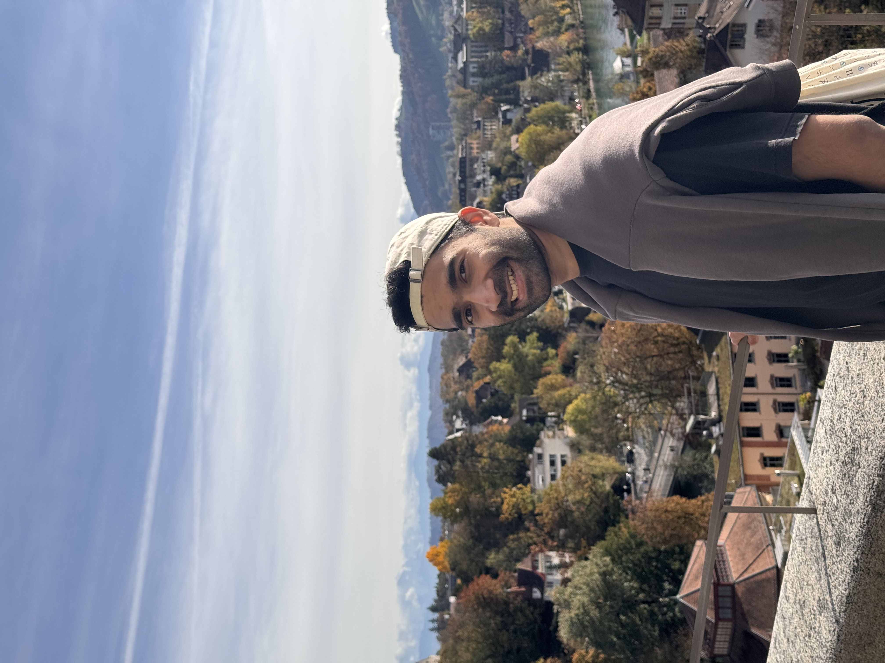
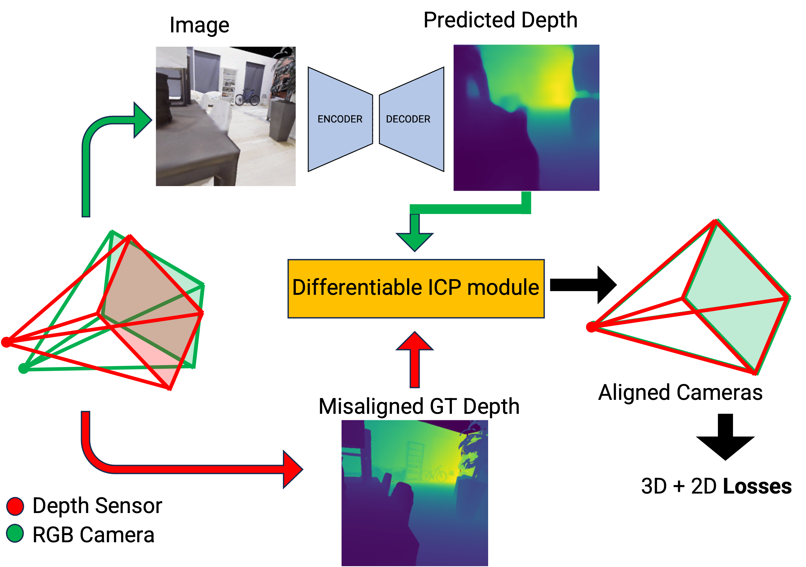
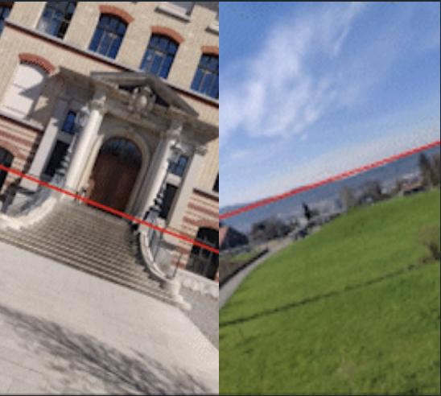
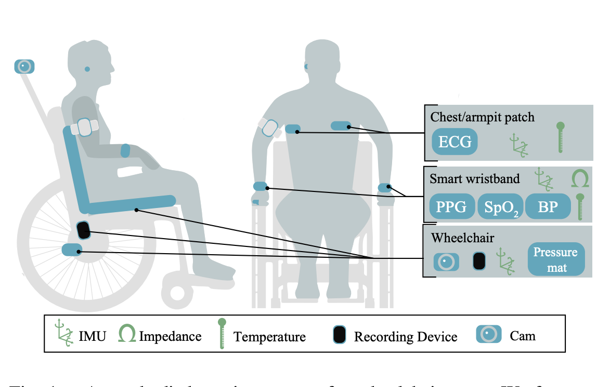
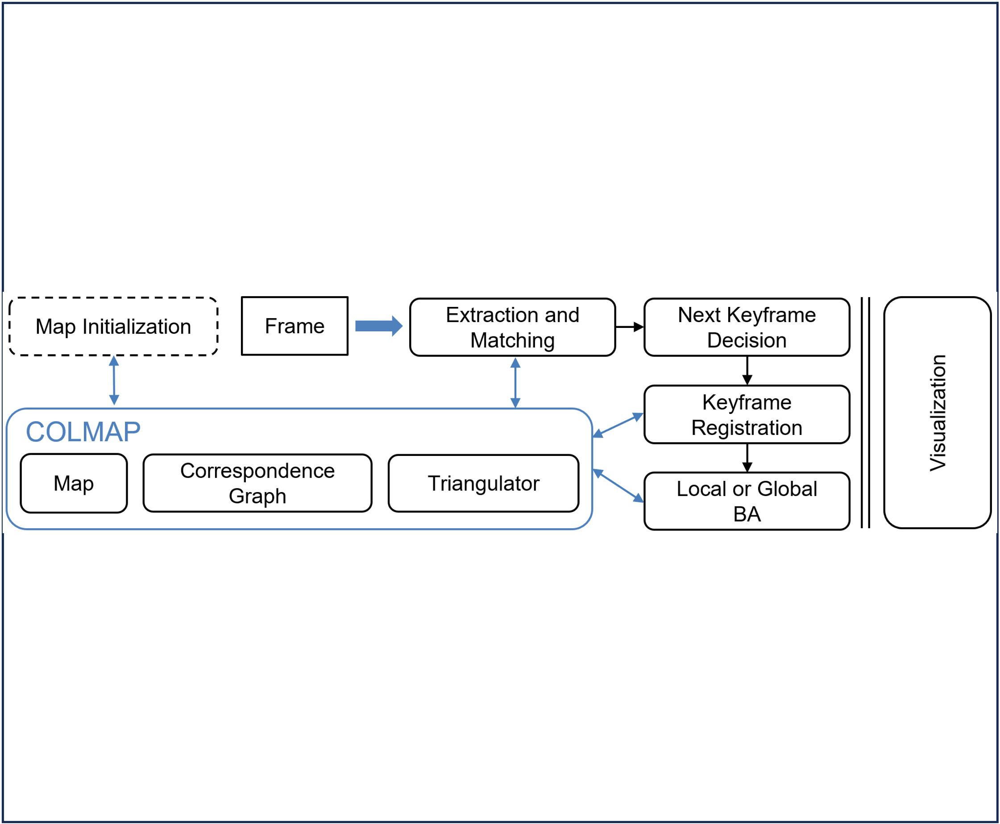

|
Alan Savio Paul Hi! I'm an MSc. Computer Science graduate from ETH Zürich, where I focused on Deep Learning and 3D Computer Vision. I recently completed my Master Thesis titled "Improving 2D Map-based Visual Localization" at the Computer Vision and Geometry Lab (CVG). I am interested in working on Visual Localization and Mapping using Deep Learning. In January 2025, I will join Niantic Labs' AR Mapping team in London for 6 months as a research intern to work on exciting localization and mapping problems. I previously interned with Disney Research Studios Zürich and IBM UK. Before moving to Zürich, I completed a BSc. Artificial Intelligence and Computer Science (Honours) at the University of Edinburgh, UK. I am seeking a PhD position to continue working on 3D Computer Vision + Deep Learning from Fall 2025. |
 |
{kind=link}
Research ProjectsI'm broadly interested in working on Spatial AI for self-driving, robotics, and augmented reality applications. More specifically, I am interested in 3D reconstruction, mapping, visual localization, and uncertainty estimation. Some of my projects are listed below: |

|
Improving 2D Map-based Visual Localization
Alan S Paul, Zador Pataki, Paul-Edouard Sarlin, Marc Pollefeys Master Thesis, 2024 Slides / Thesis / Demo / Code A neural network that localizes a single image on 2D OpenStreetMap and Satellite maps, by inferring multi-scale Bird's Eye View maps. |
|  |
Leveraging Misaligned RGB-D data for Training Monocular Depth Estimation
Alan S Paul, Mihai Dusmanu, Zuria Bauer, Marc Pollefeys Research in CS, 2023 A differentiable module that aligns misaligned RGB-D datasets during training of monocular depth estimation networks. |
|  |
Deep Single Image Camera Calibration
Alan S Paul, Rémi Pautrat, Paul-Edouard Sarlin, Marc Pollefeys Semester Project, 2023 Neural network that estimates extrinsic (roll and and pitch) and intrinsic (focal length and distortion) camera parameters from a single image. |
|  |
Activity Recognition for Spinal Cord Injury Patients
Sebastian Bensland, Alan S Paul, Leoni Grossmann, Inge Eriks Hoogland, Robert Riener, Diego Paez-Granados IEEE SII, 2023 Paper A method to detect activities of daily living (ADL) of spinal cord injured (SCI) patients in wheelchairs using a camera and wearable sensors. |
|  |
COLMAP-SLAM
Alan S Paul, Vukasin Bozic, Markus Pobitzer, Max Wilder-Smith 3D Vision course project, 2022 SLAM system built with components of COLMAP's Structure-from-Motion pipeline to get the best of both worlds: speed and robustness. |
|
Website template by Jon Barron. |